ESP8266这个东西真心好用，很便宜，12元一块，就能让嵌入式系统访问互联网了。而且看了它的文档，它不仅可以使用AT指令来交互，还能使用它的SDK来编程。也就是说，你可以直接用它的SDK来编写自己的整个系统，然后生成一个固件，烧写进ESP8266。这样，你的系统生来就有了网络能力，而且还不需要买单片机了。不过它的SDK比较复杂，以后慢慢学。今天先来记录简单的AT操作，以方便以后使用。
在介绍之前，先附上ESP8266较新的AT指令集文档，写的都挺清楚的。AT-Espressif AT 指令集_AIThinkerMod_v021.pdf。本文的目的就是教你怎么使用，以消除最初的恐惧感。
首先按照《ESP8266串口Wifi模块固件烧写与激活》的记录，把ESP8266的固件烧写进去。假设你已经会用sscom42.exe或者其他的串口软件，并且已经打开了对应的串口。
刚刚上电时，ESP8266会先输出一段乱码，最后跟着“ready”字样，这说明已经就绪了：
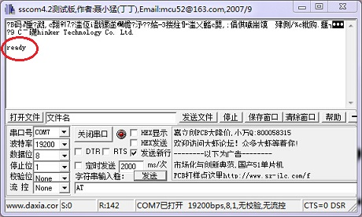
当然，你可能会疑惑，我怎么知道一开始的波特率是多少？这个确实是个问题。通常是115200，如果实在不确定，可以穷举呀！大不了波特率从110、300、600、1200、2400一直试到115200、128000、256000，然后每次换一个波特率，就插拔一下ESP8266的电源，让他冷启动。只要最后能够输出“ready”字样，就说明就是这个波特率了。
====================阶段一：AT命令示例=====================
===================示例一：重启======================
向ESP8266输入
AT+RST
，记得勾选“发送新行”，因为AT指令需要以换行结尾：
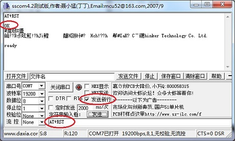
所有的输入都会被ESP8266输出以回显，然后就是命令的执行结果，最后附上独立一行的“OK”，或者“ERROR”或者某个很明显的结束标志。
输入“AT+RST”之后，ESP8266输出“OK”，接下来就是重启过程，这个过程和冷启动一样，先输出乱码，然后输出“ready”。
===================示例二：设置串口参数================
输入
AT+UART=19200,8,1,0,0
就可以把串口设置为“波特率19200，8位数据位，1位停止位，无校验位，无流控”。
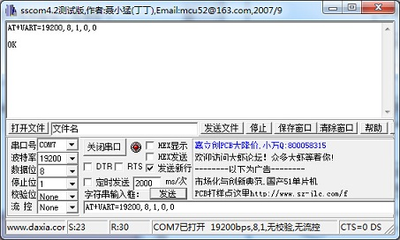
==================示例三：设置WIFI模式==============
ESP8266有三种模式可以选择，1为Station模式，也就是加入某个无线网络，2为AP模式，也就是自身成为一个无线网络提供者，让其他设备加入，3为AP+Station模式，这种模式下，ESP8266一方面作为一个设备加入某个无线网络，另一方面自己又创建一个无线网络供其他设备接入。
输入
AT+CWMODE=3
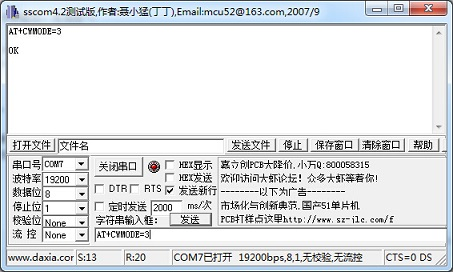
========================示例三：创建无线网络===================
输入
AT+CWSAP="zjs_esp8266","123456789",5,4
上面的命令，创建了一个SSID为“zjs_esp8266”、密码为“123456789”的无线网络，该无线网络使用的信道是5，用的加密方式是4（WPA/WPA2）。
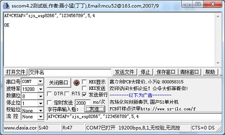
之后，就可以在电脑或者手机上搜索到这个无线网络啦：
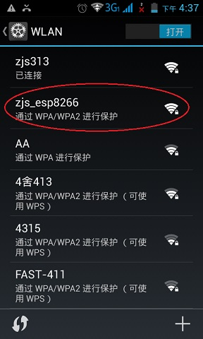
========================示例四：加入无线网络=====================
输入
AT+CWJAP="zjs313","123456789"
加入网络的命令是不是很简单？这么一条命令就是告诉ESP8266，快去加入“zjs313”这个网络，密码是“123456789”（密码当然是假的啦^_^）。
这个命令比较慢，要耐心等待。如果无法加入网络（比如不存在这个网络，或者密码错误，或者其他原因），ESP8266会输出“FAIL”字样，如图：
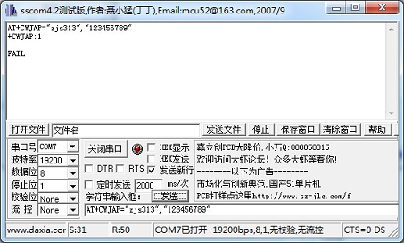
因为密码是错误的。当输入正确的密码后，就能成功加入网络，此时输出是“OK”：
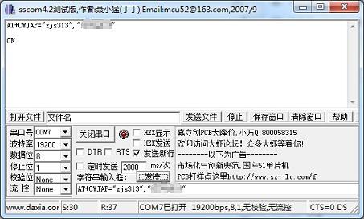
====================示例五：查看MAC地址==================
之前的命令都是设置一些参数，现在再来介绍一些查看参数的命令。
每个ESP8266都有两个MAC地址，一个是用作Station的，一个是用作AP的。
如果要查看Station的MAC地址，输入
AT+CIPSTAMAC?
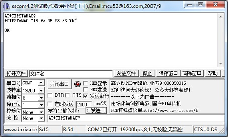
如果要查看AP的MAC地址，输入：
AT+CIPAPMAC?

更多的命令看看AT-Espressif AT 指令集_AIThinkerMod_v021.pdf就行。
=======================阶段二：数据传输====================
这里着重讲一下数据传输部分。首先需要明确这么几个事实：
1、ESP8266可以使用TCP连接或者UDP连接；
2、ESP8266有单连接与多连接两种方式，单连接方式下，ESP8266只能创建一个TCP连接或者创建一个UDP监听端口；多连接方式下，ESP8266能创建最多4个TCP连接或者创建4个UDP监听端口；
3、TCP的操作分两种：
（1）先开启TCP监听服务，等待连接；这种方式只能使用多连接模式。
（2）直接创建TCP连接，主动与对端建立连接；这种方式可以多连接也可以单连接。多连接模式下，必须指定连接的编号（0-3）；
4、UDP端口在创建时必须指定本地端口，创建后本地端口不可再变。当有UDP数据报发送到该端口，ESP8266将通过串口输出数据报内容。多连接模式下，创建UDP端口必须制定端口编号（0-3）；
5、在创建UDP端口时，需要指定远程目标的变更规则，分为三种：
（1）创建时就指定对端的IP与端口，并且始终以该地址作为UDP数据包的目的地（中途不会改变）；
（2）创建时指定对端的IP与端口，当收到第一个UDP数据包后，把发送的目的地改为该数据报的源地址，以后不再变更（只变更一次）；
（3）创建时指定对端的IP与端口，每当收到一个UDP数据报，就把发送的目的地改为该数据报的源地址（不断变更）。
6、当ESP8266同时作为AP与Station时（也就是脚踏两只“网络”时），路由功能会出错。或者干脆说，ESP8266内部根本就没有做路由判断。比如，ESP8266自己创建的网络的SSID是“zjs_esp8266”，IP地址是192.168.4.1，而它又以Station身份加入了“zjs313”网络，IP地址是192.168.1.112。此时，当ESP8266向192.168.1.114（笔记本）发送UDP包时，192.168.1.114是收不到的，因为ESP8266直接把这个数据包放到了192.168.4.0这个网段上了。也就是说，ESP8266发送的数据包，优先送到自己创建的网络上，如果自己没有创建网络，就送到自己连接的网络上。
===============示例一：主动建立TCP连接=============
首先保证电脑和ESP8266都已经连入了同一个无线局域网。我的电脑获得的IP是192.168.1.102。
在电脑上开启NetAssist.exe，并且在9000端口开启TCP Server，如图：
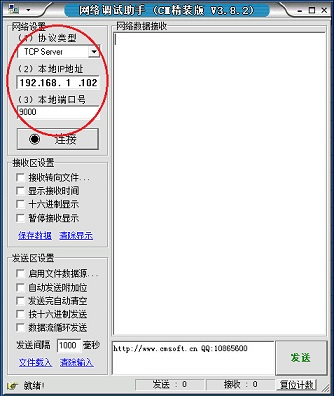
记得点击“连接”以开启端口。
用sscom42.exe向ESP8266输入如下命令：
AT+RST AT+CWMODE=1 AT+CWJAP="zjs313","123456789" AT+CIPSTART="TCP","192.168.1.102",9000
之所以通过AT+CWMODE=1来把ESP8266设置为Station模式，是为了避免之前第6点中说到的路有错误问题。而AT+CIPSTART=”TCP”,”192.168.1.102″,9000则是命令ESP8266与192.168.1.102:9000建立TCP连接。结果如下：
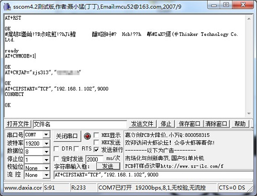
“CONNECT”字样说明已经建立了连接。
在NetAssist.exe中发送一段文本“hello,esp8266!”：
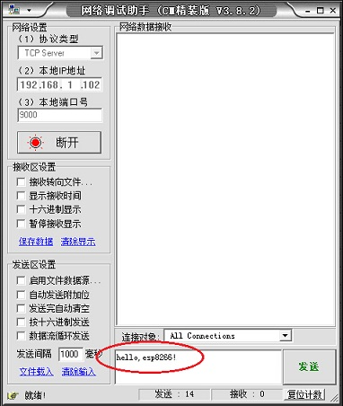
sscom42.exe中立即出现“+IPD,14:hello,esp8266!”字样：
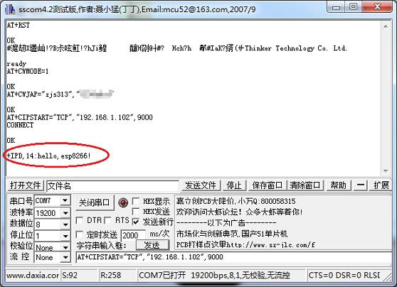
说明数据从笔记本的网卡发出，经过路由器转发给ESP8266，ESP8266又通过串口输出数据。也可以试试让ESP8266从串口读取数据，然后通过网络发送给笔记本。在sscom42.exe中输入
AT+CIPSEND=6
这个命令表面接下来要发送一个6字节长的数据。命令输入后，会出现“>”符号，提示你输入数据：
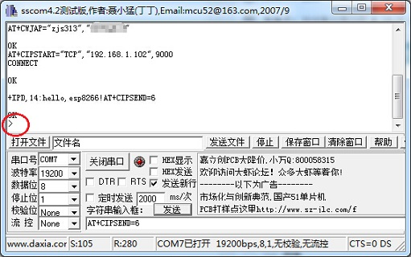
然后输入“hello”，回车，会发现NetAssist.exe收到了数据：
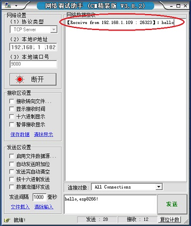
如果是多连接，那么建立连接时，需要指定连接号：
AT+RST AT+CWMODE=1 AT+CWJAP="zjs313","123456789" AT+CIPMUX=1 AT+CIPSTART=0,"TCP","192.168.1.102",9000
而发送数据时，则如同这样：
AT+CIPSEND=0,5 hello
这指定了使用0号连接发送。
====================示例二：监听TCP连接=================
AT+RST AT+CIPMUX=1 AT+CIPSERVER=1,4000
开启TCP服务器之前，必须先设置为多连接模式才行，也就是“AT+CIPMUX=1”。现在已经在4000端口监听TCP连接请求了。
然后看一下ESP8266分到的IP地址是啥：
AT+CIFSR
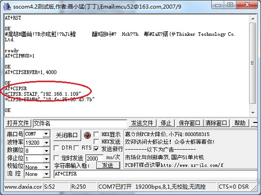
原来是192.168.1.109。
然后打开NetAssist.exe，配置为TCP Client，服务器IP地址为192.168.1.109，端口为4000，点击连接：
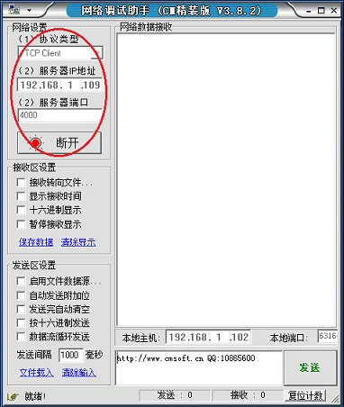
刚刚点下“连接”，就看到sscom42.exe中传来了”0,CONNECT”字样，这个意思是说建立了0号连接。连接号从0开始递增，最高为3。
接下来的收发数据与之前的单连接略有不同，那就是每次发数据都需要指定连接号，比如
AT+CIPSEND=0,5 hello
这指定了使用0号连接发送。
================示例三：建立UDP通信===================
AT+RST AT+CIPSTART="UDP","192.168.1.102",4000,9000,0
这命令意思是说，建立UDP，对端地址是192.168.1.102:4000，本地端口时9000，对端地址不再改变。
之后，在NetAssist.exe中，建立UDP，端口4000，IP为192.168.1.102（笔记本自己的IP），然后连接，连接之后，把目标主机和目标端口改为192.168.1.109和9000，如图：
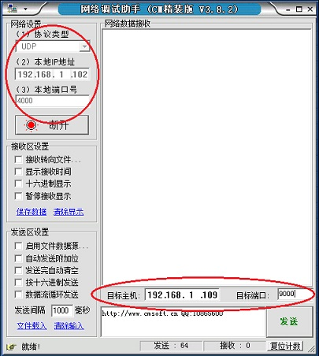
之后点击“发送”，会发现sscom42.exe中输出了“http://www.cmsoft.cn QQ:10865600”
UDP的发送、多连接模式下的UDP，都可以类比于之前的示例。
============================关于UDP广播=====================
这里强调一点，UDP模式下，是可以收发广播包的。只需要NetAssist.exe中把目标主机设置为255.255.255.255即可。而ESP8266发送广播包的话，只需要在创建UDP时，目标主机填“255.255.255.255”即可，类似于：
AT+RST AT+CIPSTART="UDP","255.255.255.255",4000,9000,0
这样，ESP8266所有发的包都将广播。
如果希望ESP8266接受广播包，但是以定向发送的数据包作为回应的话，可以这样：
AT+RST AT+CIPSTART="UDP","255.255.255.255",4000,9000,2
最后一个参数2意味着，数据包的目的地址为最后一次收到的数据包的源地址。可以参考上文或者文档。